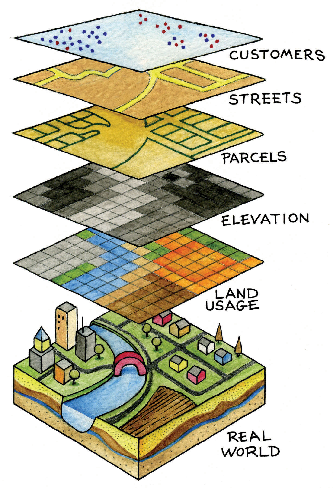

Up to this point, the primary concern of this chapter was to introduce concepts essential to geography that are also relevant to geographic information systems (GISs). Furthermore, the introduction of these concepts was prefaced by an overview of how we think spatially and the nature of geographic inquiry. This final section is concerned with defining a GIS, describing its use, and exploring its future.
So what exactly is a GIS? Is it computer software? Is it a collection of computer hardware? Is it a service that is distributed and accessed via the Internet? Is it a tool? Is it a system? Is it a science? The answer to all these questions is, “GIS is all of the above—and more.”
From a software perspective, a GIS consists of a special type of computer program capable of storing, editing, processing, and presenting geographic data and information as maps. There are several GIS software providers, such as Environmental Systems Research Institute Inc. (http://www.esri.com), which distributes ArcGIS, and PitneyBowes (http://www.pbinsight.com), which distributes MapInfo GIS. Though online mapping services and interfaces are provided by companies like Google, Yahoo!, and Microsoft, such services are not (yet) considered fully fledged GIS platforms. There are also open-source GIS options, such as GRASS (http://grass.itc.it), which is freely distributed and maintained by the open-source community. All GIS software, regardless of vendor, consists of a database management system that is capable of handling and integrating two types of data: spatial data and attribute data.
Spatial dataFacts about the location and position of phenomena on the earth’s surface. refer to the real-world geographic objects of interest, such as streets, buildings, lakes, and countries, and their respective locations. In addition to location, each of these objects also possesses certain traits of interest, or attributesThe characteristics and qualities of features and phenomena located on the surface of the earth., such as a name, number of stories, depth, or population. GIS software keeps track of both the spatial and attribute data and permits us to link the two types of data together to create information and facilitate analysis. One popular way to describe and to visualize a GIS is picturing it as a cake with many layers. Each layer of the cake represents a different geographic theme, such as water features, buildings, and roads, and each layer is stacked one on top of another (see Figure 1.8 "A GIS as a Layered Cake").
Figure 1.8 A GIS as a Layered Cake
As hardware, a GIS consists of a computer, memory, storage devices, scanners, printers, global positioning system (GPS) units, and other physical components. If the computer is situated on a network, the network can also be considered an integral component of the GIS because it enables us to share data and information that the GIS uses as inputs and creates as outputs.
As a tool, a GIS permits us to maintain, analyze, and share a wealth of data and information. From the relatively simple task of mapping the path of a hurricane to the more complex task of determining the most efficient garbage collection routes in a city, a GIS is used across the public and private sectors. Online and mobile mapping, navigation, and location-based services are also personalizing and democratizing GISs by bringing maps and mapping to the masses.
These are just a few definitions of a GIS. Like several of the geographic concepts discussed previously, there is no single or universally accepted definition of a GIS. There are probably just as many definitions of GISs as there are people who use GISs. In this regard, it is the people like you who are learning, applying, developing, and studying GISs in new and compelling ways that unifies it.
In addition to recognizing the many definitions of a GIS, it is also constructive to identify three general and overlapping approaches to understanding GISs—the application approach, the developer approach, and the science approach. Though most GIS users would probably identify with one approach more than another, they are not mutually exclusive. Moreover, as GISs and, more generally, information technology advance, the following categories will be transformed and reshaped accordingly.
The application approach to GISs considers a GIS primarily to be a tool. This is also perhaps the most common view of a GIS. From this perspective, a GIS is used to answer questions, support decision making, maintain an inventory of geographic data and information, and, of course, make maps. As a tool, there are arguably certain skills that should be acquired and required in order to use and apply a GIS properly. The application approach to a GIS is more concerned with using and applying GISs to solve problems than the GIS itself.
For instance, suppose we want to determine the best location for a new supermarket. What factors are important behind making this decision? Information about neighborhood demographics, existing supermarkets, the location of suppliers, zoning regulations, and available real estate are all critical to this decision. A GIS platform can integrate such information that is obtained from the census bureau, realtors, the local zoning agency, and even the Internet. A suitability analysis can then be carried out with the GIS, the output of which will show the best locations for the supermarket given the various local geographic opportunities (e.g., demographics/consumers) and constraints (e.g., supply chain, zoning, and real estate limitations) that exist.
There are several professional communities and organizations concerned with the use and application of a GIS, such as the Urban and Regional Information Systems Association (http://urisa.org) and the Global Spatial Data Infrastructure Association (http://www.gsdi.org).
Unlike the previous example in which a GIS is applied to answer or solve a particular question, the developer approach to GISs is concerned with the development of the GIS as a software or technology platform. Rather than focusing on how a GIS is used and applied, the developer approach is concerned with improving, refining, and extending the tool and technology itself and is largely in the realm of computer programmers and software developers.
The ongoing integration and evolution of GISs, maps, the Internet, and web-based mapping can be considered an outcome of the developer approach to GISs. In this regard, delivering maps, navigation tools, and user-friendly GISs to people via the Internet is the central challenge at hand. The underlying, and to a large extent hidden, logic and computer code that permit us to ask questions about how to get from point A to point B on a navigation website or to see where a new restaurant or open house is located on a web-based map are for the most part the domain of GIS programmers and developers. The Open Source Geospatial Foundation (http://www.osgeo.org) is another example of a community of GIS developers working to build and distribute open-source GIS software.
It is the developer approach to GISs that drives and introduces innovation and is informed and guided by the existing needs and future demands of the application approach. As such, it is indeed on the cutting edge, it is dynamic, and it represents an area for considerable growth in the future.
The science approach to GISs not only dovetails with the applications and developer approaches but also is more concerned with broader questions and how geography, cognition, map interpretation, and other geospatial issues such as accuracy and errors are relevant to GISs and vice versa (see Longley et al. 2005).Longley, P., M. Goodchild, D. Maguire, and D. Rhind. 2005. Geographic Information Systems and Science. 2nd ed. West Sussex, England: John Wiley. This particular approach is often referred to as geographic information science (GIScience)The academic field that is concerned with advancing knowledge about geographic information., and it is also interested in the social consequences and implications of the use and diffusion of GIS technology. From exploring the propagation of error to examining how privacy is being redefined by GISs and related technology, GIScience is at the same time an agent of change as well as one of understanding.
In light of the rapid rate of technological and GIS innovation, in conjunction with the widespread application of GISs, new questions about GIS technology and its use are continually emerging. One of the most discussed topics concerns privacy, and in particular, what is referred to as locational privacy. In other words, who has the right to view or determine your geographic location at any given time? Your parents? Your school? Your employer? Your cell phone carrier? The government or police? When are you willing to divulge your location? Is there a time or place where you prefer to be “off the grid” or not locatable? Such questions concerning locational privacy were of relatively little concern a few years ago. However, with the advent of GPS and its integration into cars and other mobile devices, questions, debates, and even lawsuits concerning locational privacy and who has the right to such information are rapidly emerging.
As the name suggests, the developer approach to GISs is concerned with the development of GISs. Rather than focusing on how a GIS is used and applied, the developer approach is concerned with improving, refining, and extending the tool itself and is largely in the realm of computer programmers and software developers. For instance, the advent of web-based mapping is an outcome of the developer approach to GISs. In this regard, the challenge was how to bring GISs to people via the Internet and not necessarily how people would use web-based GISs. The developer approach to GISs drives and introduces innovation and is guided by the needs of the application approach. As such, it is indeed on the cutting edge, it is dynamic, and it represents an area for considerable growth in the future.
The definitions and approaches to GISs described previously illustrate the scope and breadth of this special type of information technology. Furthermore, as GISs become more accessible and widely distributed, there will always be new questions to be answered, new applications to be developed, and innovative technologies to integrate.
One notable development is the emergence of what is called the geospatial web. The geospatial web or geoweb refers to the integration of the vast amounts of content available on the Internet (e.g., text, photographs, video, and music) with geographic information, such as location. Adding such geographic information to such content is called geotagging and is similar to geocoding. The integration of geographic information with such content opens up new ways to access, search, organize, share, and distribute information.
Mapping mashups, or web-based applications that combine data and information from one source and map it with online mapping applications, are an example of the geoweb at work. There are mashups for nearly everything that can be assigned a location, from restaurants and music festivals to your photographs and favorite hikes. Several examples of such mapping mashups can be found on the Internet at sites such as http://googlemapsmania.blogspot.com.
Though the geoweb may not necessarily be considered a GIS, it certainly draws upon the same concepts and ideas of geography and may someday encompass GISs. Perhaps more important, the diffusion of GISs and the emergence of the geoweb have increased geographic awareness by lowering the barriers of viewing, using, and even creating maps and related geographic data and information. Though there are several benefits to this democratization of GISs, and more generally information and technology, it should also be recognized that there are also consequences and implications.
As with any other technology, great care must be taken in the use and application of GISs. For instance, when was the last time you questioned what appeared on a map? For better or worse, maps are among the most authoritative forms of information and are the subject of Chapter 2 "Map Anatomy". As tomorrow’s GIS practitioners, you will have the ability to influence greatly how decisions are made and how others view and relate to the world with the maps that you create in a GIS environment. What and how you choose to map is therefore a nontrivial exercise. Becoming more aware of our biases, limitations, and preferences permits us to take full advantage of geographic information systems with confidence.